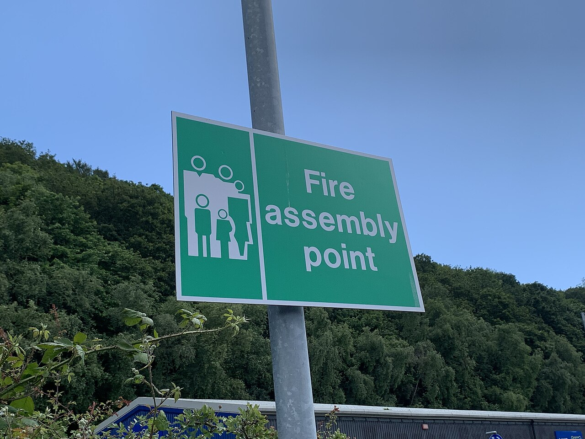
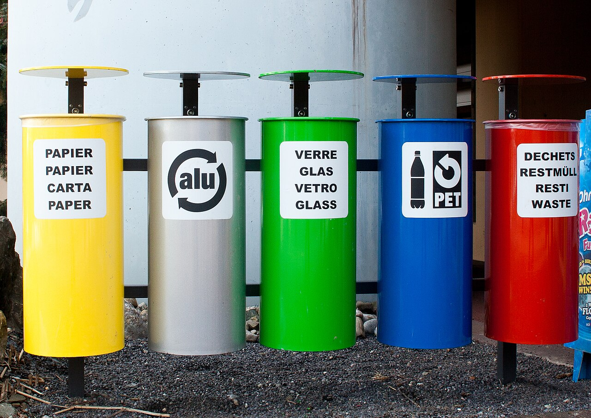
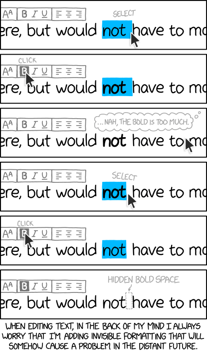
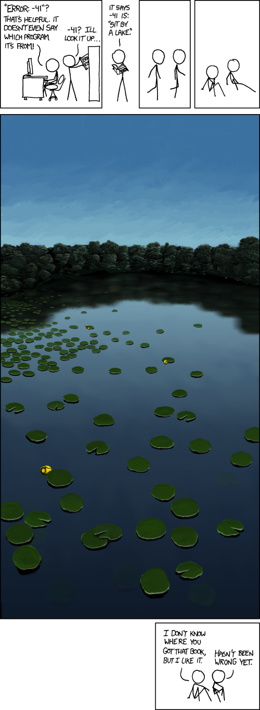
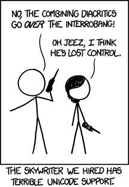

Exceptions and Reading Text
Handle expected failures on purpose, follow exceptions through method calls, and read tokens or lines without losing data. Then read real files in Java and Python.
The lecture, then the practice
Choose a section, or use the arrow keys in the section list. Hover or tap an underlined part of a program for its explanation. Run it, then use Edit to test a prediction of your own.
01Expected failures and specific handlers

try block is skipped, and control goes straight to the matching catch or except. Once the handler has dealt with it, the program carries on after the whole try statement, like people going back inside after the all-clear. Where it breaks: a fire drill is rehearsed; an exception reports something that really went wrong. Photo: Meirion, 2026 · CC BY-SA 2.01.1A failure changes control flow
An exception is an object that reports a failure while the program runs, such as bad input or a missing file.
When an operation fails, it throws (Java) or raises (Python) an exception. The rest of the try block is skipped, and the first matching handler runs. Then the program continues after the whole try statement.
With no matching handler, the program stops and prints a report. Java names the exception first. Python names it last, so read a traceback from the bottom up.
Exception in thread "main" java.lang.NumberFormatException: For input string: "bad" at java.base/java.lang.Integer.parseInt(Integer.java:527) ... at Demo.main(Demo.java:4)
Traceback (most recent call last):
File "demo.py", line 1, in <module>
print(int("bad") + 1)
ValueError: invalid literal for int() with base 10: 'bad'A Java compile error or a Python SyntaxError stops the program before it runs, so no try can catch it.
1.2Catch what you can explain
Catch only failures you can explain: NumberFormatException around Integer.parseInt, ValueError around int(). Then your message can be exact: Invalid: bad.
Keep the try block small. Otherwise a failure from another line reaches the handler and gets the wrong message. Python’s else runs only if the try succeeded, and the handlers do not cover it.
catch (Exception e) { } and except: pass hide every failure, bugs included. The program goes wrong later, far from the cause. If you catch, do something visible: print a message, use a stated default, or ask again.
Errors should never pass silently.
Unless explicitly silenced.
import this in Python to read all nineteen lines.
catch (NumberFormatException e) or except ValueError takes only failed conversions, so when it runs you know exactly what happened. catch (Exception e) is the red bin on the right, labelled waste: everything fits, including things that belonged somewhere else, and nobody notices. A broad handler hides bugs the same quiet way. Photo: Ludovic Péron, 2012 · CC BY-SA 3.01.3The try statement in both languages
Same jobs, different names. Python adds an else clause. Java puts that code at the end of the try block.
| Job | Java | Python |
|---|---|---|
| try something that may fail | try { … } | try: |
| handle one kind of failure | catch (NumberFormatException e) { … } | except ValueError as e: |
| handle two kinds the same way | catch (NumberFormatException | ArithmeticException e) | except (ValueError, ZeroDivisionError) as e: |
| run only if nothing failed | (the end of the try block) | else: |
| always run on the way out | finally { … } | finally: |
| the exception’s message | e.getMessage() | str(e) |
| its type, as text | e.getClass().getSimpleName() | type(e).__name__ |
| report a failure yourself | throw new IllegalArgumentException("…"); | raise ValueError("…") |
Handlers are checked top to bottom, and the first match wins. Put the most specific one first.
catch (Exception e) above catch (NumberFormatException e) catches everything first. Java will not compile it: exception NumberFormatException has already been caught. Python accepts it, and the second handler never runs.
1.4Exceptions you will meet this week
The exception’s name tells you what happened.
| What happened | Java | Python |
|---|---|---|
| text is not a whole number | Integer.parseInt("abc") → NumberFormatException | int("abc") → ValueError |
| whole-number division by zero | 7 / 0 → ArithmeticException | 7 // 0 → ZeroDivisionError |
| index past the end | ArrayIndexOutOfBoundsException, IndexOutOfBoundsException | IndexError |
| using an object that is not there | NullPointerException | AttributeError on None |
Scanner.nextInt() meets a word | InputMismatchException | (no Scanner: int(input()) gives ValueError) |
| reading after the input has ended | nextLine() → NoSuchElementException | input() → EOFError |
| file not found | FileNotFoundException, NoSuchFileException | FileNotFoundError |
The languages disagree on what a number is. Python’s int(" 85 ") ignores the spaces and gives 85. Java’s Integer.parseInt(" 85") throws. Both accept "+7". Neither accepts "3.0". Try these in the first diagram below.
Java code often checks first: while (in.hasNextInt()). Python code often tries and handles the exception (section 3’s Did you know? names this style). Both are fine. Converting typed text with neither is not.
Where does control go when a conversion fails?
Step through both programs together. Before each conversion, predict whether it works. Then try the other input sets: some number-like values are refused, and Java and Python sometimes disagree. The highlighted line is running now.
This interactive diagram needs JavaScript.
One broad catch, or one catch per failure?
This program shares 100 between a number of people, read as text. Two things can go wrong: the text is not a number, or the number is 0. Pick a version and step through. Watch what the output says about the input 0.
This interactive diagram needs JavaScript.

" 5" because of one character you cannot see. When a conversion fails on input that looks right, print the input inside quotes (or with repr in Python) so hidden spaces and line breaks show up. xkcd 2109, Invisible Formatting (2019) — Randall Munroe, CC BY-NC 2.5- Parsing can fail here, before the addition and the print run.
- Handle this conversion error, then go on to the next value.
- Catch only the expected conversion failure.
- Runs only if the
trysuite raised nothing.
- Loop for ever.
breakis the only way out, reached only with a good mark. - The only line in the
try: the one that can raiseValueError.int(" 85 ")ignores the spaces; Java’sInteger.parseIntwould not. !rprints the text in quotes (itsrepr), so hidden spaces or an empty line show up.- Skip the range check and read the next line.
- A number is not automatically a mark. The range is checked after the conversion succeeds.
- Whole-number division: throws
ArithmeticExceptionwhenbis 0. (doubledivision would giveInfinity.) - A multi-catch (Java 7 and later): one handler for two unrelated types. Python:
except (ValueError, ZeroDivisionError) as e:. - The exception’s class name, so one handler can still say which failure happened. (
e.getMessage()would add the detail, such as the bad text.) - The handler is inside the loop, so a failed pair costs only that pair.
On 4 June 1996 the first Ariane 5 rocket broke up about 40 seconds into its flight. Its guidance software converted a 64-bit floating-point number into a 16-bit signed integer; the value was too big to fit, and the conversion raised an exception (an “Operand Error”) that nothing handled. Other conversions in the same code were protected; this one was not. The back-up guidance computer ran the same software and had already failed in the same way. Pictured: a later Ariane 5 before the launch of the James Webb Space Telescope in 2021. Ariane 501 Inquiry Board report (ESA) ESA press release
Replace bad with 0. Then move the output after the conversion and explain which statements can run when conversion fails.
02Propagation, checked exceptions and cleanup
2.1Throw here, handle at the right level
Each method call gets a frame on the call stack, holding its parameters and local variables. The newest frame is on top.
If a method throws and has no matching handler, its frame is abandoned at once. The exception arrives at the line that called it, and the search repeats there. If no frame handles it, main is abandoned too and the program stops. This is propagation (unwinding the stack).
So catch where something useful can happen. parseMark cannot ask the user again, but the input loop in main can. Throw where the problem is found, with a clear message: throw new IllegalArgumentException("mark out of range: " + mark); in Java, raise ValueError(f"mark out of range: {mark}") in Python.
A Java stack trace lists the newest frame first. A Python traceback (“most recent call last”) lists it last. In both, find the first line that names your file.
main calls total, which calls parseMark. An exception thrown in the smallest doll has to come out through every doll around it, and each one either handles it, with a matching handler, or lets it pass. A method that cannot do anything useful about a failure should let it pass to a caller that can, and say so with throws when the exception is checked. Photo: Photo: RK812 , Doll carved by Zvezdochkin, painted by Malyutin, 2000 · public domain2.2Cleanup is separate from success
A finally block runs whenever control leaves the try statement: normally, after a handler, while an exception propagates, or through a return. Only stopping the program outright, such as Java’s System.exit, skips it.
So finally running does not mean the work succeeded. Track success separately.
To close a resource, use Java’s try-with-resources, try (BufferedReader in = …) { … }, or Python’s with open(…) as f:. Both close it on every way out.
A return inside finally replaces the try block’s result, and an exception on its way up vanishes without a trace. Use finally for cleanup only.
finally runs on every path, and Java’s try-with-resources and Python’s with do the closing for you. Notice what the return slot does not record: whether the book was any good. finally running does not mean the work succeeded. Photo: Michal Klajban, 2014 · CC BY-SA 4.02.3Checked or unchecked: Java’s family tree
Java exceptions form one class tree. A handler for a class also catches its subclasses.
Throwable
├── Error serious JVM problems: do not catch
│ ├── OutOfMemoryError
│ └── StackOverflowError
└── Exception checked, except the RuntimeException branch
├── IOException checked
│ └── FileNotFoundException
└── RuntimeException unchecked
├── IllegalArgumentException
│ └── NumberFormatException
├── ArithmeticException
├── NullPointerException
└── IndexOutOfBoundsExceptionA checked exception is under Exception but not under RuntimeException. The compiler makes you catch it, or declare it with throws, which passes the duty to every caller. Otherwise javac stops with unreported exception IOException; must be caught or declared to be thrown.
Unchecked exceptions (RuntimeException and below, and Error) carry no such duty.
catch (IllegalArgumentException e)also catches its subclassNumberFormatException.throwsonly declares. It never handles anything.
If a client can reasonably be expected to recover from an exception, make it a checked exception. If a client cannot do anything to recover from the exception, make it an unchecked exception.
The Java Tutorials, “Unchecked Exceptions — The Controversy”Python has a similar tree (BaseException → Exception → ValueError) but no checked exceptions. Say it in the docstring: “Raises ValueError if the mark is outside 0 to 100.”
A bare except: also catches KeyboardInterrupt (Ctrl+C) and SystemExit. Inside a loop, the program can become impossible to stop. Name the exception, or at the widest write except Exception.
2.4Catch, declare, or let it crash?
The real skill is deciding where each failure belongs:
| Situation | What to do | Why |
|---|---|---|
| The user typed a word where a number belongs | Catch it there, explain, and ask again | Only the input loop can ask again |
| A file the user named is missing | Catch it where you talk to the user, and name the file | It is expected. A stack trace is not a message |
| A helper method cannot decide what to do | Let it propagate: throws IOException in Java, a docstring line in Python | Its caller knows the context |
| A rule is broken: a mark of 120 | throw / raise, with the bad value in the message | Fail where the rule breaks, not three methods later |
NullPointerException, IndexError and friends | Do not catch them: fix the code | These are bugs, not bad input |
| Something has to be closed | try-with-resources, or with | It closes on every path |
catch (Exception e) { } is the programming version of taking the battery out of a smoke alarm because the beeping is annoying.
The call stack: watch an exception travel to its handler
Each method call adds a frame to the call stack, newest on top. When an exception is thrown, frames are removed from the top until a try with a matching handler is reached. Any finally on the way runs. Pick a program and step through it.
This interactive diagram needs JavaScript.
Checked or unchecked? Ask the compiler
Choose how load is declared and what its body does. Nothing runs: this only asks the compiler whether the program is allowed. A checked exception, such as IOException, must be caught or declared with throws. An unchecked one (RuntimeException and its subclasses) need not be. The messages are what javac prints on Ed.
This interactive diagram needs JavaScript.
Which blocks run? try, catch, finally and an automatic close
Sheet stands in for a file: it prints when opened and when closed. Java opens it with try-with-resources, Python with with. Pick the text to check, predict which handler runs, then step through. The coloured chips under each program show which blocks ran.
This interactive diagram needs JavaScript.

ValueError("mark out of range"), and print the message when you handle them. xkcd 1024, Error Code (2012) — Randall Munroe, CC BY-NC 2.5- An exception in
parsepropagates back to thistryblock. - Cleanup. Here it runs after the catch; it would also run after a normal finish.
- The text parsed, but the value breaks a rule. Reject it with a clear message.
- Runs whether the
trysucceeded or raised.
- The rule breaks here, so the failure is reported here, with the bad value in the message. Unchecked: no
throwsneeded. readLine()may throw the checkedIOException.totalcannot fix it, so it declares it and lets its caller decide.- If
parseMarkthrows, this line never finishes.sumis not updated, andtotalis abandoned. - Only the first input reaches this line. For the other two,
total’s frame is removed first. - Catches the range failure and the
NumberFormatExceptionfrom"abc", a subclass ofIllegalArgumentException.
Change 120 to 80. Predict how the successful result differs while the finally message stays present. Explain where validation belongs if several callers share mark().
03Tokens, lines and end of input
3.1Choose a reading contract
First ask how the input is laid out.
- Tokens: values separated by any whitespace. Line breaks do not matter. Use
Scanner.nextInt()in Java orsys.stdin.read().split()in Python. - Line records: one record per line, such as
Linh,85. Read whole lines, then split each one. - Free text: names like
Le Linh. A token reader would cut it in two, so read lines.
Scanner skips all whitespace, line breaks included, before each token. So the example below adds three numbers spread over two lines.
while (in.hasNextInt()) also stops at the first non-integer. Input 10 20 x 30 gives 30 and silently leaves x 30 unread. To report stray words, read with next() and convert yourself.
Scanner.nextInt() cares only about the words: spaces and line breaks are all just separators. A line reader cares where each line ends, because a line is often one record: one student, one order. Choose the reader that matches how your input is laid out. Photo: Hannes Grobe, 2020 · CC BY-SA 4.03.2Do not confuse a blank line with EOF
The end-of-input signal (EOF, “end of file”) must differ from every real line, even an empty one.
| Read returns… | Java readLine() | Python readline() |
|---|---|---|
| a line | "tea" (no line break) | "tea\n" (line break kept) |
| a blank line | "" | "\n" |
| end of input | null (not a string) | "" |
The Python tutorial: “if f.readline() returns an empty string, the end of the file has been reached, while a blank line is represented by '\n'”.
In Python, for line in file: is simpler: it stops at the end by itself. Remove each line’s "\n" with line.rstrip("\n"). Mind the spelling: Java readLine(), Python readline().
if not line.strip(): break stops at the first blank line and silently drops every later record (second diagram below). Test for null in Java. In Python, let the for loop end by itself.
readLine() gives "" (Python’s readline() gives "\n") and more lines may follow. End of input is the tail lamp: null in Java, "" from Python’s readline(). Photo: James E. Petts, 2022 · CC BY-SA 2.03.3Reading methods side by side
in is a BufferedReader, sc a Scanner, f an open Python file.
| Task | Java | Python |
|---|---|---|
| read one line | in.readLine() · sc.nextLine() | input() · f.readline() |
| every line until EOF | while ((line = in.readLine()) != null) | for line in f: / for line in sys.stdin: |
| one integer | sc.nextInt() | int(input()) (one number per line) |
| all tokens | while (sc.hasNextInt()) total += sc.nextInt(); | for t in sys.stdin.read().split(): |
| the EOF signal | readLine() gives null; hasNext…() gives false; nextLine() throws NoSuchElementException | the for loop ends; readline() gives ""; input() raises EOFError |
| is the line break kept? | no | yes with readline() and for; no with input() |
| split a record | String[] parts = line.split(","); | parts = line.split(",") |
nextInt() leaves the line break behind, so the next nextLine() returns an empty string. Call nextLine() once to discard it, or read every line and convert with Integer.parseInt. The explained example at the end of this section shows the trap.
3.4Ending the input yourself, and null
At a terminal, you end keyboard input yourself: Ctrl+D at the start of a line on macOS and Linux, or Ctrl+Z then Enter on Windows. A file or test input ends where its text ends.
In Java, test for null before using the line: line.length() on null throws NullPointerException. The condition (line = in.readLine()) != null reads, stores and tests in one step.
I call it my billion-dollar mistake. It was the invention of the null reference in 1965.
C. A. R. Hoare, abstract of Null References: The Billion Dollar Mistake, QCon London 2009 Portrait: Rama, 2011 · CC BY-SA 2.0 frHoare added the null reference to ALGOL W, he wrote, “simply because it was so easy to implement”.
Tokens or lines? Watch the reader move through the text
The grey boxes are the input's characters: ␣ is a space and ⏎ a line break. The arrow is the reader's position. Step through to see what each call consumes and returns.
This interactive diagram needs JavaScript.
A blank line is not the end
Both programs read tea, a blank line, then coffee, one line at a time. Watch what each read returns. Then switch to the buggy version, which treats a blank line as the end.
This interactive diagram needs JavaScript.
- A string source, so the example runs without a file.
- Check for an integer token before consuming it.
- Text in memory that you can loop over line by line, like a file.
- Number every line from 1, empty lines included.
- Reads the token
2and stops. The line break after it is still waiting. - Reads the rest of line 1, which is empty. Without it, name 1 would be
"", name 2Le Linh, andTran Anwould never be read. - The brackets make an empty string visible:
[]. - Each name is a whole line, spaces included.
next()would return onlyLe.
Every Python for loop ends with an exception. The loop asks its iterator for the next item again and again; when there are no more, the iterator raises StopIteration, which tells the for loop to stop. You never see it, because the loop handles it. Reading a file line by line ends the same way. Python’s glossary has a name for this style of trying first and handling the exception: EAFP, “easier to ask for forgiveness than permission”. Python tutorial: Iterators Python glossary: EAFP
Add a blank line at the end of the string source, then count the records. Compare that with adding spaces to the Scanner input.
04Readers, resource scope and real files
4.1Read until the reader reports EOF
Java reads text through a chain of readers:
- A
FileReader, or aStringReaderfor text in memory, supplies characters. - A
BufferedReaderwraps it, reads in large chunks and addsreadLine(). Files.newBufferedReader(path, StandardCharsets.UTF_8)builds this chain and names the encoding in one call.
Loop until readLine() returns null. It returns the line “or null if the end of the stream has been reached”. Do not test ready(): it only says whether a read could go ahead without waiting.
The examples read from a StringReader or StringIO so they run in your browser. On Ed, swap in a file reader. The loop stays the same.
ready() asks: whether a read could go ahead without waiting. It is not “have all the bags come out?”. Only the end-of-input signal answers that: readLine() returning null. The diagram below shows the opposite surprise too: for text held in memory, ready() says yes even after the last line. Photo: Michael Coghlan from Adelaide, Australia, 2020 · CC BY-SA 2.04.2File paths and text encoding
A relative path such as data/marks.txt starts from the working directory: the folder the program started in. An IDE may use the project folder, not your source folder. An absolute path (/home/linh/marks.txt, C:\Users\Linh\marks.txt) starts at the top of the file system.
File not found? Print the working directory: System.getProperty("user.dir") or os.getcwd(). A missing file is expected, not a bug. Catch FileNotFoundException or NoSuchFileException (Java), or FileNotFoundError (Python), and name the file.
An encoding says which bytes mean which characters. Always name UTF-8. Java 8’s FileReader and older Pythons use the machine’s default, which varies. Java 18+ and Python 3.15+ default to UTF-8, but naming it keeps names like Nguyễn safe on every version.
marks.txt or data/marks.txt is directions from the program’s working directory: the folder it was started from, which is not always the folder its source file is in. If the directions lead nowhere, opening fails (FileNotFoundException or NoSuchFileException in Java, FileNotFoundError in Python): an expected failure to report clearly. Photo: joe goldberg from Seattle, WA, USA, 2006 · CC BY-SA 2.04.3Opening files: Java and Python side by side
| Task | Java 8 | Python |
|---|---|---|
| open for reading, as UTF-8 | Files.newBufferedReader(Paths.get("marks.txt"), StandardCharsets.UTF_8) | open("marks.txt", encoding="utf-8") |
| … and close it automatically | try (BufferedReader in = …) { … } | with open(…) as f: |
| handle every line | while ((line = in.readLine()) != null) { … } | for line in f: |
| all lines at once, as a list | Files.readAllLines(path, StandardCharsets.UTF_8) | f.read().splitlines() |
| the file does not exist | NoSuchFileException (Files), FileNotFoundException (FileReader) | FileNotFoundError |
| any other read failure | IOException: checked, so catch or declare it | OSError |
| imports | java.io.*, java.nio.file.*, java.nio.charset.StandardCharsets | none needed |
A list of every line is fine for a class list. A loop that reads one line at a time handles a file of any size.
4.4A robust reading loop, step by step
Real files contain mistakes. A good loop reports each one and keeps going:
- Open with try-with-resources or
with. Report a missing file. - Loop to the end signal, counting lines so messages can say line 4.
- Remove the line break. Handle blank lines on purpose: skip or report.
- Split the record and check the number of fields.
- Convert inside a small
try. On failure, report the line number and text, then continue. - Check the range:
120is a number, but not a mark. - After the loop, print a summary.
The explained example Report every bad record and keep going, at the end of this section, follows these steps in Python.
A try around the whole loop ends it at the first bad record, losing every later one. Put the try inside the loop, around one record.
readLine() != null, not ready()
The example reads until readLine() returns null. The second version tests ready() instead, with a limit of 5 tries so it stops. Step through both. Watch what ready() says when the text is used up.
This interactive diagram needs JavaScript.
Read a real file, one record per line
Each program first writes its own marks.txt in the folder it runs in, then reads it back. The file appears above the code, and the arrow marks the next line to read. Pick a case: the example, a file with a bad line, or a path that does not exist.
This interactive diagram needs JavaScript.

StandardCharsets.UTF_8 or encoding="utf-8", whenever you read or write a file, so accented letters such as the ones in Vietnamese names survive the trip. xkcd 1209, Encoding (2013) — Randall Munroe, CC BY-NC 2.5- Reads one line without its line break.
nullmeans end of input. - An empty string is a blank line, not the end of input.
- Name the encoding for both writing and reading.
- Closes the file when the block ends, even after an exception.
- Text in memory that acts like an open file, so this runs in the browser. On Ed, use
with open("marks.txt", encoding="utf-8") as data:and indent the loop. - Numbers lines from 1, so each message can say which line was wrong.
- A blank line is skipped on purpose, with a message. It does not end the loop.
- Check the record’s shape before unpacking it.
Vyhas no comma. - The
tryholds only the conversion, so the handler’s message is always true. - Range check after conversion:
120converts but is still rejected.
- Opens the file as UTF-8 and wraps it in a
BufferedReader, in one call (Java 7 and later). - Read, store, test: the loop ends at the real end of the file. The blank line 2 counts like any other.
- The expected failure gets its own handler and a plain message. It must come before its superclass,
IOException. - Creating the sample file could fail too. This short demo declares it; a real program would report it.
- A relative path: the file is created in, and read from, the working directory.
UTF-8, the encoding these programs ask for by name, was designed by Ken Thompson one night in about September 1992, on a placemat in a New Jersey diner, with Rob Pike “cheering him on”. In Pike’s own account he wishes they had kept the placemat. Pictured: a diner placemat from 1960, in neighbouring Pennsylvania. Rob Pike, “UTF-8 history” (2003)
Use a final line with no trailing newline and verify it is still read. Explain why a test that checks only the line count would miss incorrectly parsed marks.
05Coding exercises
These are new practice tasks for this website. Read the input and output contract, complete the starter, then run the tests. They are not assessment submissions.
06Team activity
Build a failure table
List outcomes for a missing file, an empty file, a blank record, a non-numeric mark and an out-of-range mark. Choose which layer should report each failure. Do not treat an empty file as a missing one.
Prove the last line survives
Prepare three small text inputs: a trailing newline, no trailing newline, and a blank middle line. Trace the loop condition and each returned line. Explain why ready() is not the right test for EOF.
Break it on purpose
One partner writes the mark-record reader from coding exercise 6 (or opens the explained example in section 4). The other writes five inputs designed to break it: a missing comma, two commas, a mark with spaces, a negative mark, a blank last line. Before each run, the reader’s author predicts the exact output. Swap roles. Finish by naming the one input that surprised you, and the line of code responsible.
07Quiz
Predict the behaviour before running a program. Answer every question, then grade to see explanations. Nothing here is recorded or submitted.
08Further reading
The Ed lessons below provide the course material behind this page. The worked examples, activities and practice questions here are newly written adaptations.
Exceptions
Read the lesson and trace its examples on Ed.
edstem.orgCourse source / referenceBasic File I/O in Java
Read the lesson and trace its examples on Ed.
edstem.orgCourse source / referenceBasic File I/O in Python
Read the lesson and trace its examples on Ed.
edstem.orgCourse source / referenceBufferedReader contract
readLine, EOF and the distinction between readiness and remaining data.
docs.oracle.comCourse source / referencePython errors and exceptions
Handling, raising, else and finally.
docs.python.orgCourse source / referencePython text I/O
Reading, writing, encoding and with statements.
docs.python.orgCourse source / referenceChecked or unchecked: the Java Tutorials
The official guideline on when an exception should be checked, quoted in section 2.
docs.oracle.comCourse source / referenceAriane 501 Inquiry Board report
The full report behind M2 and the section 1 note: an exception that was detected, then handled the wrong way.
www-users.cse.umn.eduCourse source / referenceTony Hoare: Null References, the Billion Dollar Mistake
The QCon London 2009 talk abstract quoted in section 3.
qconlondon.comPhotographs
From Wikimedia Commons, reused under the licence each one names. Author and licence come from the Commons API rather than from anyone’s memory — see media/fetch-photo.py.
| Image | Source |
|---|---|
| w9-assembly-point | Fire assembly point sign, Bangor - geograph.org.uk - 8348992 — Meirion, 2026 · CC BY-SA 2.0 |
| w9-recycling-bins | Tri des déchets (cropped) — Ludovic Péron, 2012 · CC BY-SA 3.0 |
| w9-ariane5 | Ariane 5 with James Webb Space Telescope Prelaunch. (NHQ202112230013) — Bill Ingalls, 2021 · public domain |
| w9-matryoshka | First matryoshka museum doll open — Photo: RK812 , Doll carved by Zvezdochkin, painted by Malyutin, 2000 · public domain |
| w9-book-returns | Book returns box, Kaitaia — Michal Klajban, 2014 · CC BY-SA 4.0 |
| w9-typewriter | Typewriter-12 hg — Hannes Grobe, 2020 · CC BY-SA 4.0 |
| w9-tail-lamp | Rear of train, showing tail lamp — James E. Petts, 2022 · CC BY-SA 2.0 |
| w9-buffer-stop | Red buffer stop at the end of the line, Pontypridd railway station - geograph.org.uk - 6201890 — Jaggery, 2019 · CC BY-SA 2.0 |
| w9-baggage-carousel | Baggage Carousel is Still (50220288957) — Michael Coghlan from Adelaide, Australia, 2020 · CC BY-SA 2.0 |
| w9-you-are-here | You are here - street sign — joe goldberg from Seattle, WA, USA, 2006 · CC BY-SA 2.0 |
| w9-diner-placemat | 1960 - Peter Pan Diner - Place mat- Allentown PA — Unknown photographer Self-scanned, 1960 · public domain |


Comics
| Comic | Source |
|---|---|
| xkcd 2109 | Invisible Formatting (2019) — Randall Munroe, CC BY-NC 2.5 |
| xkcd 1024 | Error Code (2012) — Randall Munroe, CC BY-NC 2.5 |
| xkcd 1209 | Encoding (2013) — Randall Munroe, CC BY-NC 2.5 |
M1Where exceptions came from
Not examinable. try, catch and throws were argued over for decades. Knowing the argument makes the rules feel less arbitrary.
Exceptions get a notation
John B. Goodenough publishes Exception Handling: Issues and a Proposed Notation (Communications of the ACM 18(12)), an early systematic look at reporting and handling failures.
CLU: a failure is part of the method’s contract
Barbara Liskov and Alan Snyder describe CLU’s exceptions in Exception Handling in CLU (IEEE Transactions on Software Engineering). Liskov later won the 2008 Turing Award.
Hoare’s warning
In his Turing Award lecture, Tony Hoare criticises the new Ada language’s many features, “some of them, like exception handling, even dangerous” (quoted below).
Java makes some exceptions checked
Java 1.0 ships with the rule from section 2: an IOException must be caught or declared, a RuntimeException need not be. That year, an unhandled conversion exception destroys the first Ariane 5 (see M2).
C# leaves them out
In The Trouble with Checked Exceptions, C#’s lead designer Anders Hejlsberg explains why C# has none: “I see two big issues with checked exceptions: scalability and versionability.”
Python gets the with statement
PEP 343, by Guido van Rossum and Alyssa Coghlan, adds the with statement (Python 2.5). Closing a file no longer needs a hand-written finally.
Java SE 7: try-with-resources and multi-catch
try-with-resources closes anything AutoCloseable. One catch can name several types with |.
The debate goes on
Kotlin, a newer Java-platform language, “treats all exceptions as unchecked” (Kotlin documentation). Java still checks them.
…supposedly achieved by a plethora of features and notational conventions, many of them unnecessary and some of them, like exception handling, even dangerous.
C. A. R. Hoare, The Emperor’s Old Clothes, 1980 ACM Turing Award Lecture, on Ada Portrait: Rama, 2011 · CC BY-SA 2.0 frHoare lost: exception handling is now in almost every mainstream language. But his worry runs through this week. A handler is a hidden jump, and a careless one hides failures. Use few handlers, specific types and small try blocks.
M2Ariane 501: the handler that made it worse
Section 1’s Did you know? gives the short version. The details are a lesson in exception handling, not arithmetic. All quotes are from the report of the Ariane 501 Inquiry Board (July 1996; ESA’s scan).
What happened
- The inertial reference system (SRI) was “practically the same as that of an SRI which is presently used on Ariane 4, particularly as regards the software”.
- An alignment function kept running after launch, although “As soon as the launcher lifts off, this function serves no purpose.”
- It produced “an unexpected high value of an internal alignment function result called BH, Horizontal Bias”. Converting it from a 64-bit floating-point number to a 16-bit signed integer failed with an Operand Error.
- Seven variables were found at risk of such an error. Four were protected. Three were not, because “they were either physically limited or that there was a large margin of safety”. The board was told not all conversions were protected because of an 80% maximum workload target for the computer.
The handler made it worse
There was a response. The specification said “the failure should be indicated on the databus” and “the SRI processor should be shut down”. That suits a random hardware fault, where a back-up unit takes over: the mechanisms “are designed for a random hardware failure which can quite rationally be handled by a backup system”. But the back-up SRI ran the same software on the same data. It had already shut down “during the previous data cycle (72 milliseconds period) for the same reason”. The active unit followed about 0.05 seconds later.
“It was the decision to cease the processor operation which finally proved fatal.”Ariane 501 Inquiry Board report, 1996
The board’s summary: “The exception was detected, but inappropriately handled because the view had been taken that software should be considered correct until it is shown to be at fault.”
What it means for a Week 9 program
| In the report | In your code |
|---|---|
| Three conversions were left unprotected | Every conversion of outside data (a user, a file) needs a check or a handler |
| The handler shut the unit down, whatever the cause | A handler should fit its failure. One response for everything is a broad catch |
| The back-up ran the same code and failed the same way | Retrying the same thing with the same input gives the same exception |
| The failing function served no purpose after lift-off | Unneeded code can still fail. Delete what you do not use |
M3Java and Python, side by side
Reference, not reading. Each idea this week has an equivalent in the other language, or pointedly does not.
Handling and raising
| Idea | Java | Python |
|---|---|---|
| handle a failure | try { … } catch (NumberFormatException e) { … } | try: … except ValueError as e: … |
| code that runs only on success | end of the try block | else: |
| always run on the way out | finally { … } | finally: |
| report a failure | throw new IllegalArgumentException("bad mark"); | raise ValueError("bad mark") |
| declare what may propagate | throws IOException (required for checked exceptions) | nothing; say it in the docstring |
| the widest sensible handler | catch (Exception e) | except Exception |
| no handler anywhere | stack trace, name first, newest frame on top | traceback, name last, newest frame at the bottom |
Reading input
| Idea | Java | Python |
|---|---|---|
| tokens from standard input | Scanner sc = new Scanner(System.in); sc.nextInt() | sys.stdin.read().split() |
| lines from standard input | new BufferedReader(new InputStreamReader(System.in)) | for line in sys.stdin: |
| one line | in.readLine() · sc.nextLine() | input() · f.readline() |
| end of input | readLine() == null | the for loop ends · readline() == "" |
| blank line | readLine() gives "" | readline() gives "\n" |
| not a test for EOF | ready() | checking for an empty stripped line |
| text in memory, read like a file | new StringReader("…") | io.StringIO("…") |
Files
| Idea | Java 8 | Python |
|---|---|---|
| open as UTF-8 and close automatically | try (BufferedReader in = Files.newBufferedReader(path, StandardCharsets.UTF_8)) | with open(name, encoding="utf-8") as f: |
| missing file | NoSuchFileException / FileNotFoundException | FileNotFoundError |
| other I/O failure | IOException (checked) | OSError |
| where relative paths start | System.getProperty("user.dir") | os.getcwd() |
Read, practise, explain
Read Exceptions and the input sections of the Java and Python I/O lessons. Practise parsing a bad record without silently losing the next good record.
These pages follow the topic sequence in Canvas Subject Schedule and the Ed lessons. Some topics were introduced earlier on this website, so Week 6 consolidates Week 5 before collections. Use current announcements and Canvas assignments for deadlines. Practice here is independent of graded labs, code comprehension, assignments and exams.